Tu ruta en esta guía
La herramienta evalúa el documento que ya escribiste, con la misma rúbrica de tu materia. Úsala para detectar errores antes de subir tu PDF a Classroom.
Qué es y para qué sirve
Qué evalúa, qué no evalúa y por qué te conviene usarla.
Antes de empezar
Requisitos del PDF, límite de análisis y privacidad.
Paso a paso
Cómo entrar, subir tu archivo y analizarlo.
Tu reporte
Qué significa cada parte del resultado.
Cómo interpretarlo
Niveles, puntaje y relación con tu calificación.
Consejos
Cómo aprovechar mejor la herramienta.
Preguntas frecuentes
Dudas comunes y qué hacer si algo falla.
Checklist final
Lo que debes revisar antes de entregar.
Un espejo de tu documento
El Evaluador de Proyecto Final es una herramienta web de UNICEBA que lee tu PDF y lo califica con los 5 criterios de la rúbrica de tu materia. Funciona para Proceso Administrativo y para Planeación Estratégica.
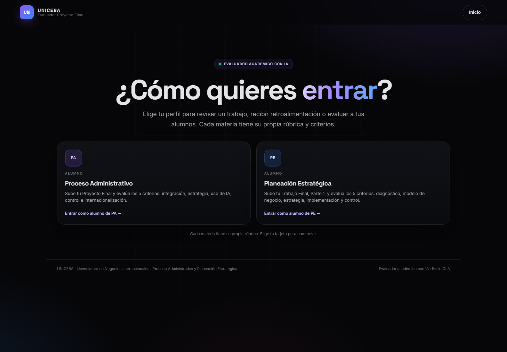
Evalúa tu PDF
Lee el texto de tu documento, asigna un nivel a cada criterio y te da fortalezas, áreas de mejora y recomendaciones concretas.
No es tu calificación oficial
Es una revisión previa con IA. Tu profesor evalúa el documento y la exposición con la rúbrica oficial.
Solo alumnos
La entrada de alumno es pública, sin usuario ni contraseña. Cada materia tiene su propia rúbrica y criterios.
Antes de entregar
Úsala cuando tengas una versión avanzada de tu documento, no en la primera página. Su valor está en detectar lo que falta.
Los 5 criterios de cada materia
Proceso Administrativo
1. Integración y coherencia (Avance 1, FODA y Porter)
2. Estrategia y organización
3. Uso de IA
4. Control y mejora
5. Internacionalización
Planeación Estratégica
1. Diagnóstico externo e interno (PESTEL, Porter, FODA y VRIO)
2. Modelo de negocio y propuesta de valor
3. Estrategia y objetivos
4. Plan de implementación
5. Evaluación, control y cultura
Lo que necesitas tener listo
El análisis funciona mejor con un PDF limpio y con texto seleccionable. Revisa estos puntos antes de subir tu archivo.
Cómo saber si tu PDF tiene texto seleccionable
- Abre el PDF y arrastra el cursor sobre un párrafo: si el texto se sombrea, sí es seleccionable.
- Si todo el documento es una imagen o una foto, la herramienta no podrá leerlo. Exporta de nuevo desde Word, Google Docs o Canva.
- Si tu documento tiene imágenes o tablas, no pasa nada: la herramienta trabaja con el texto que puede leer.
Privacidad
De tu PDF al reporte en 5 pasos
Todo el proceso toma entre 10 y 30 segundos de análisis. Sigue el orden y no cierres la pestaña mientras el evaluador trabaja.
Abre la herramienta y elige tu materia
Entra al enlace del evaluador y selecciona la tarjeta de Proceso Administrativo o Planeación Estratégica, según la materia de tu proyecto.
Elige bien: la rúbrica cambia según la materia.Sube tu PDF
Arrastra el archivo a la zona de carga o pulsa “selecciona un archivo”. Verifica que aparezca el nombre correcto y el tamaño del documento.
Si te equivocaste, pulsa la × para quitarlo y sube otro.Pulsa “Analizar proyecto”
El botón se activa cuando el archivo está cargado. La herramienta extrae el texto en tu navegador y lo envía al modelo para evaluarlo con la rúbrica.
No cierres ni recargues la pestaña durante el análisis.Espera el reporte
Verás una barra de progreso con las etapas: leer archivo, extraer texto, evaluar criterios, analizar evidencias y generar reporte. Tarda entre 10 y 30 segundos.
Lee, corrige y vuelve a analizar
Revisa el puntaje, los 5 criterios, tus fortalezas, tus áreas de mejora y las recomendaciones. Corrige el documento y, si te quedan análisis del día, vuelve a subirlo para comprobar la mejora.
Puedes copiar el reporte con el botón “Copiar reporte”.Paso 1 y 2 en pantalla
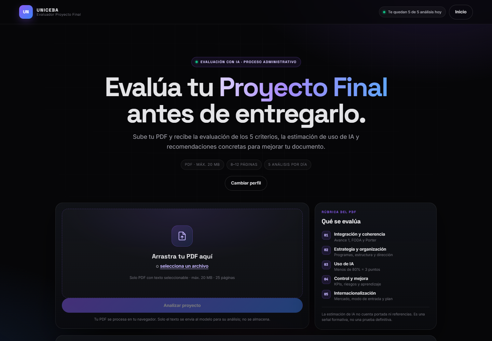
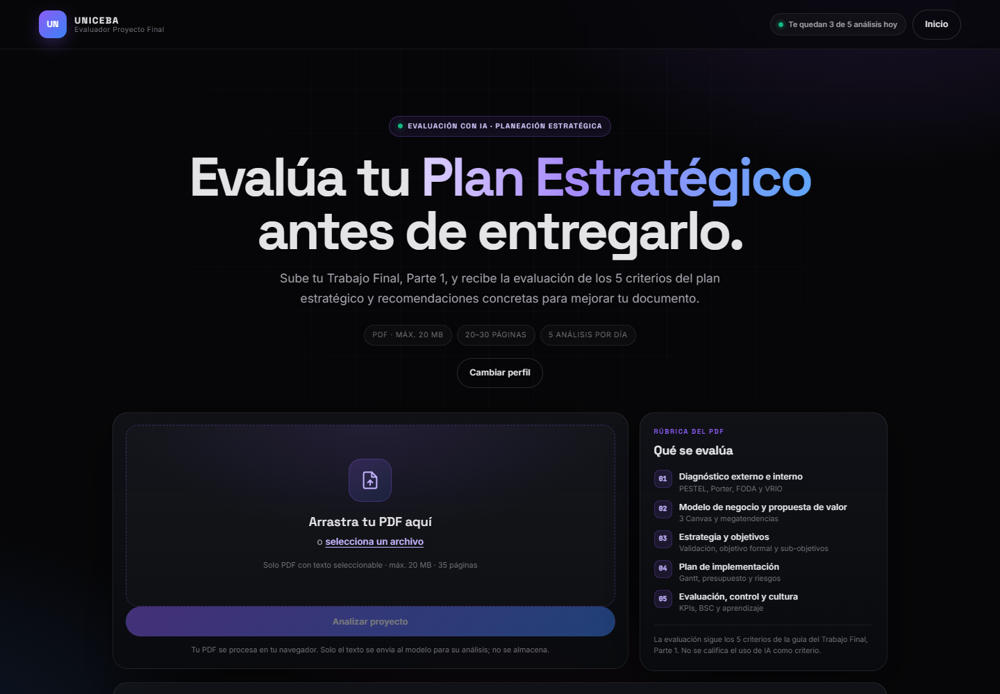
Tu archivo cargado
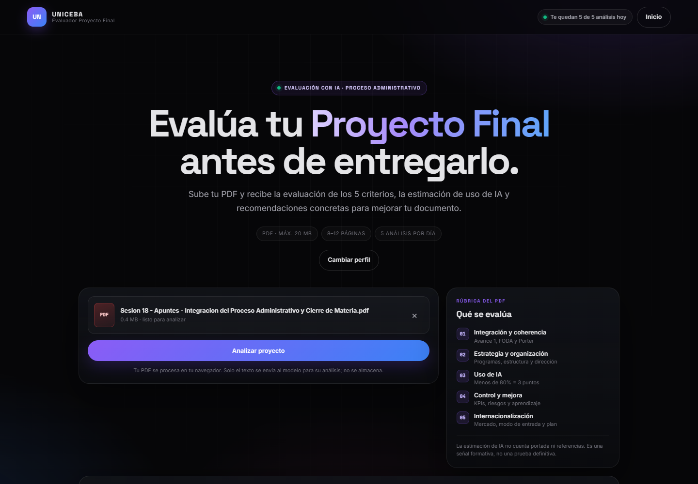
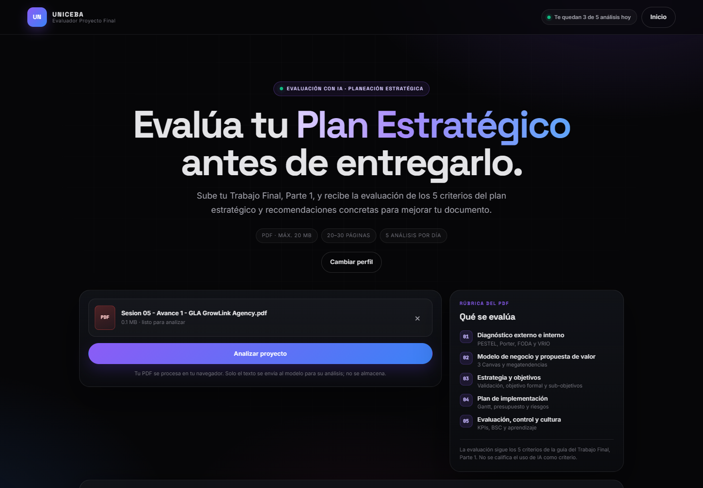
El análisis en curso
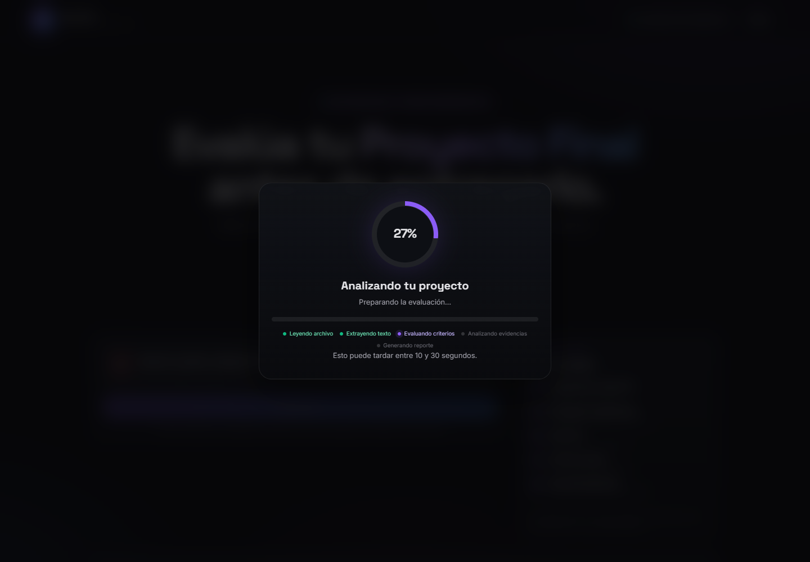
Qué vas a ver al terminar
El reporte tiene seis partes. Léelo de arriba hacia abajo: primero el resultado general y después el detalle de cada criterio.
Resultado del documento
Puntaje total sobre 15, resumen del análisis y cuánto aporta a tu nota (sobre 60).
Uso de IA (solo PA)
Porcentaje estimado de contenido generado por IA y las señales que lo sustentan.
Los 5 criterios
Nivel de cada criterio (1, 2 o 3) con tres bloques: por qué, evidencia y cómo mejorar.
Fortalezas
Lo que ya está bien y conviene conservar en la versión final.
Áreas de mejora y recomendaciones
Lo que falta y las acciones concretas para corregirlo.
Siguiente paso
El recordatorio de qué revisar antes de volver a analizar o entregar.
Resultado general
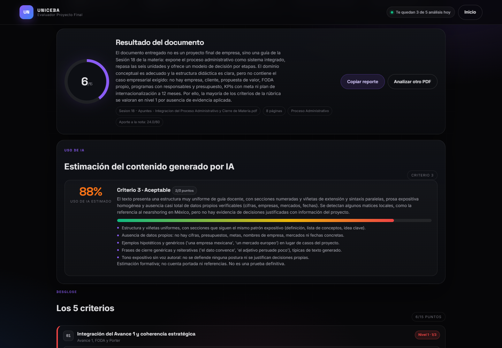
El detalle de cada criterio
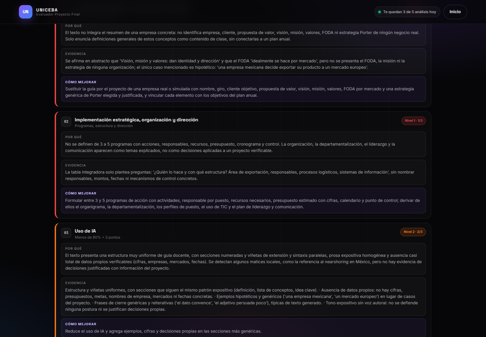
Fortalezas, áreas de mejora y recomendaciones
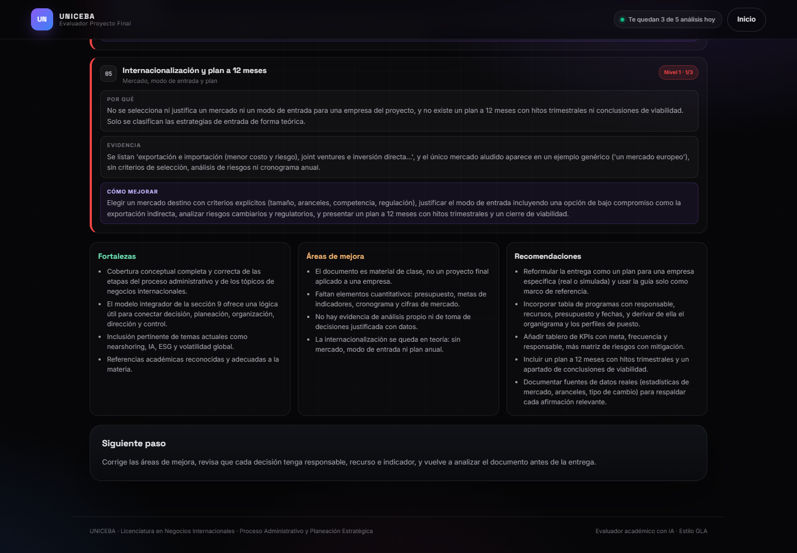
El mismo reporte en Planeación Estratégica
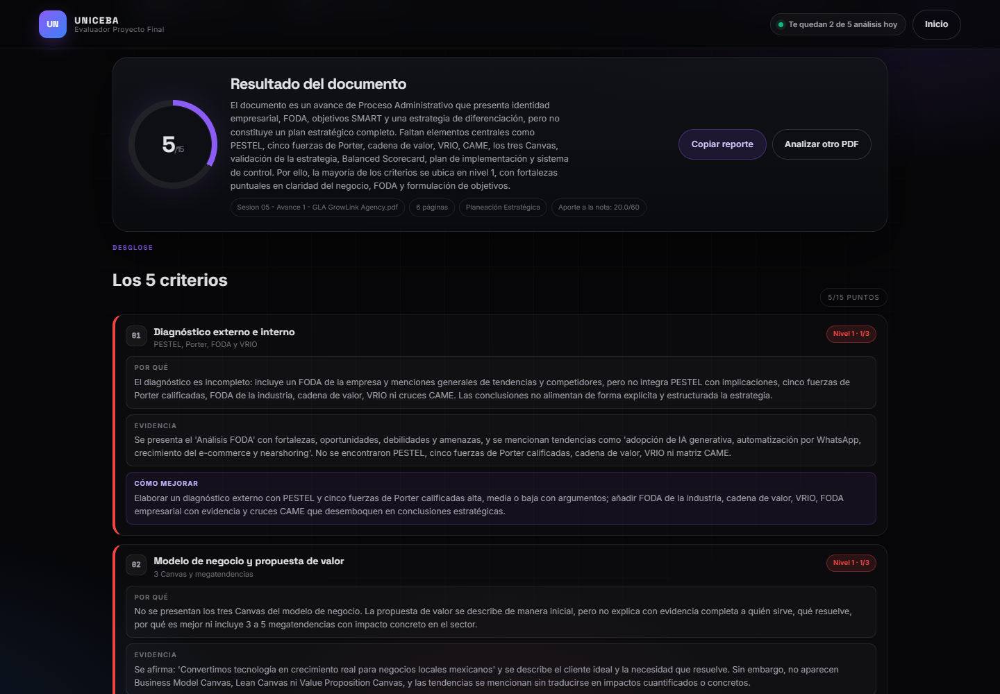
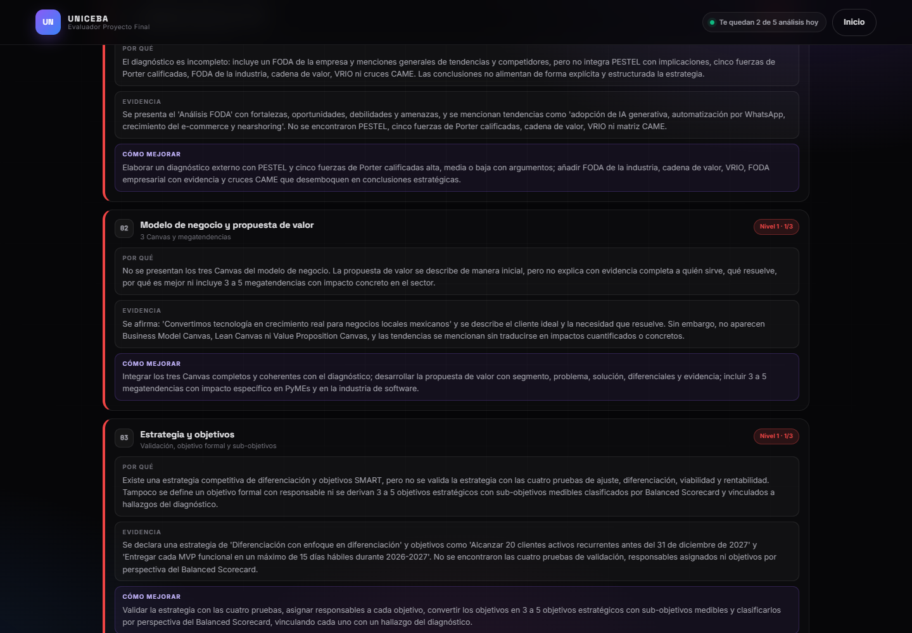
Niveles, puntaje y calificación
Cada criterio vale 3 puntos y se califica con un solo nivel. Los cinco criterios suman 15 puntos, que equivalen al 60% de la calificación de la actividad.
Nivel 3 · Óptimo
Cumple completamente lo que pide el criterio.
El documento integra todos los elementos, aporta evidencia, cifras y decisiones propias. Es el nivel que debes buscar antes de entregar.
Nivel 2 · Aceptable
Cumple la mayor parte, pero omite elementos o presenta incoherencias menores.
Hay una base correcta, pero falta precisión, evidencia o conexión entre las partes. Corrige lo que señala el reporte.
Nivel 1 · Insuficiente
No cumple el criterio o solo lo menciona de forma general.
Falta el contenido, es genérico o no se conecta con tu proyecto. Es la señal más clara de qué debes reescribir.
(Puntaje del PDF ÷ 15 × 60) + (Puntaje de la exposición ÷ 15 × 40)
La herramienta solo evalúa el documento. La exposición la califica tu profesor con su propia rúbrica.
Qué significa el porcentaje de uso de IA (solo PA)
- Menos de 80%: nivel 3. El texto conserva voz propia y datos del proyecto.
- Entre 80% y 90%: nivel 2. Hay mucha presencia de IA, aunque con adaptación.
- Más de 90%: nivel 1. El texto parece predominantemente generado por IA.
Cómo sacarle el máximo provecho
La herramienta es más útil cuando la usas como una revisión, no como un trámite de último minuto.
Ten una versión avanzada
Si tu documento está a medias, el reporte solo dirá que falta casi todo. Úsala cuando ya tengas los apartados completos.
Empieza por “Cómo mejorar”
Ese bloque te dice exactamente qué cambiar. Las fortalezas te ayudan a no borrar lo que ya funciona.
Atiende los niveles 1
Corrige primero los criterios con nivel 1: son los que más puntos te quitan y los más fáciles de detectar.
Compara los puntajes
Guarda el reporte anterior y compara. Si un criterio no subió, revisa si realmente corregiste lo que el reporte pedía.
No lo dejes para el final
Tienes 5 análisis al día. Si esperas a la última hora, puedes quedarte sin oportunidades para comprobar tus correcciones.
Escribe con tu voz
La IA puede ayudarte a ordenar ideas, pero el texto debe tener tus datos, tus decisiones y tus ejemplos. Eso también mejora tu criterio de uso de IA.
Dudas comunes
Si tu pregunta no está aquí, revisa primero los requisitos del PDF y vuelve a intentar el análisis.
¿El resultado de la herramienta es mi calificación oficial?
No. Es una evaluación previa con IA para que mejores tu documento. La calificación oficial la asigna tu profesor con la rúbrica del proyecto y la exposición.
¿Cuántas veces puedo analizar mi documento?
Cinco análisis por día por dispositivo. El contador aparece arriba, junto al botón de inicio. Si llegas al límite, espera al día siguiente.
¿Puedo subir un PDF escaneado o una foto?
No funciona bien. La herramienta necesita texto seleccionable. Si tu archivo es una imagen, expórtalo de nuevo desde Word, Google Docs o Canva como PDF.
¿Se guarda mi documento?
No. El PDF se procesa en tu navegador y solo el texto se envía al modelo para el análisis. No se almacena el archivo ni el contenido.
¿Por qué el puntaje no coincide con lo que esperaba?
La IA evalúa el texto que puede leer y aplica la rúbrica. Si un apartado está incompleto, genérico o sin evidencia, lo marca. Revisa el bloque “Evidencia” de cada criterio para entender la decisión.
¿La herramienta evalúa también mi exposición?
No. Solo evalúa el documento. La exposición se califica aparte, con la rúbrica de exposición de tu materia.
Me equivoqué de materia al entrar, ¿qué hago?
Pulsa Cambiar perfil y elige la otra tarjeta. La rúbrica y los criterios cambian según la materia, así que verifica que sea la correcta antes de analizar.
El análisis se quedó cargando o se cortó, ¿qué hago?
Espera unos segundos y vuelve a pulsar Analizar proyecto. Si el problema continúa, recarga la página, vuelve a subir el PDF y prueba de nuevo. Cada intento cuenta dentro del límite diario.
Antes de entregar
Marca cada punto. Si algo queda sin marcar, todavía tienes una oportunidad para corregirlo.
¿Listo para revisar tu documento?
Abre el evaluador, elige tu materia y sube tu PDF. Recuerda que el enlace de la herramienta está publicado en la asignación de Classroom.
Abrir el evaluador